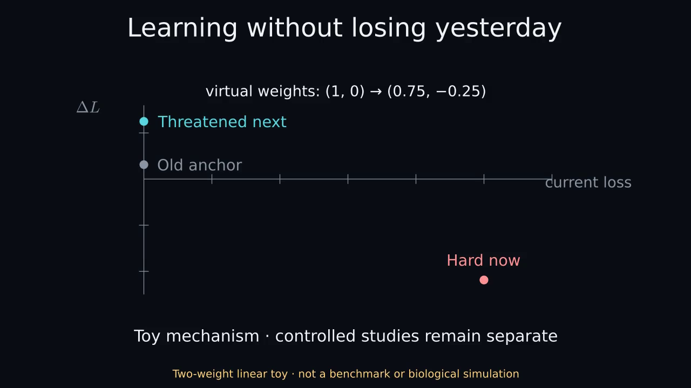

Learn today without losing yesterday
53.7-second narrated Manim illustration. Synthetic stock voice. OFFLINE LINEAR TOY · NOT BENCHMARK EVIDENCE.
Static by default. Choose playback only if you want motion and sound. Captions use approximate sentence timing.

Download narrated MP4 · Complete text and visual explanation · Captions · Original silent version
Text and visual explanation
Learn today without losing yesterday
Narrated Manim concept video. 53.667 seconds.
Synthetic stock voice: Kokoro am_michael.
Sentence captions are approximate, not word-aligned.
OFFLINE LINEAR TOY · NOT BENCHMARK EVIDENCE
0.000–8.600 seconds
Spoken: Here are two tasks that one small model can solve together. First, watch its shared weights move as it learns task A.
Visual explanation: The linear prediction is w1*x1+w2*x2. Task A has input (1,0), target 1; B has input (1,1), target 0. The shared solution (1,-1) fits both. Learning only A reaches approximately (1,0).
8.600–26.467 seconds
Spoken: Now train on B alone, and A's prediction gets worse. Instead, replay an example from task A. In this toy, that helps retain both tasks. Both paths use equal example counts, but replay needs memory and sees fewer new examples.
Visual explanation: From the learned-A state, 120 updates containing B twice approach (0.5,-0.5). A predicts 0.5 and B predicts 0. Replacing one B presentation with stored A approaches (0.999,-0.998), retaining both. Each later condition has 240 example presentations, but replay stores one old example and uses fewer B presentations. Values come from the offline demo, not image benchmarks.
26.467–40.633 seconds
Spoken: Now consider which memory to replay. The hardest example right now is different from the one most harmed by a hypothetical update. That update is only used to score the memories, then discarded.
Visual explanation: At weights (1,0), a hypothetical B step gives (0.75,-0.25). Current half-squared losses for old anchor, hard-now and threatened-next examples are 0, 0.5 and 0. Signed loss changes are +0.03125, -0.21875 and +0.125. High-loss selects hard-now; predicted-interference selects threatened-next. Uniform selection gives one-third to each. This is a scoring distinction, not a full MIR implementation or evidence that either selection improves a real model. One toy demonstrates forgetting and possible protection; another illustrates different replay scores. Neither establishes a benchmark advantage, biological fidelity, an optimal selector or guaranteed protection. Read the repository's controlled studies separately.
40.633–53.667 seconds
Spoken: These examples explain forgetting and two selection scores. They don't establish a winning selector. The repository's controlled studies include inconclusive and adverse results.